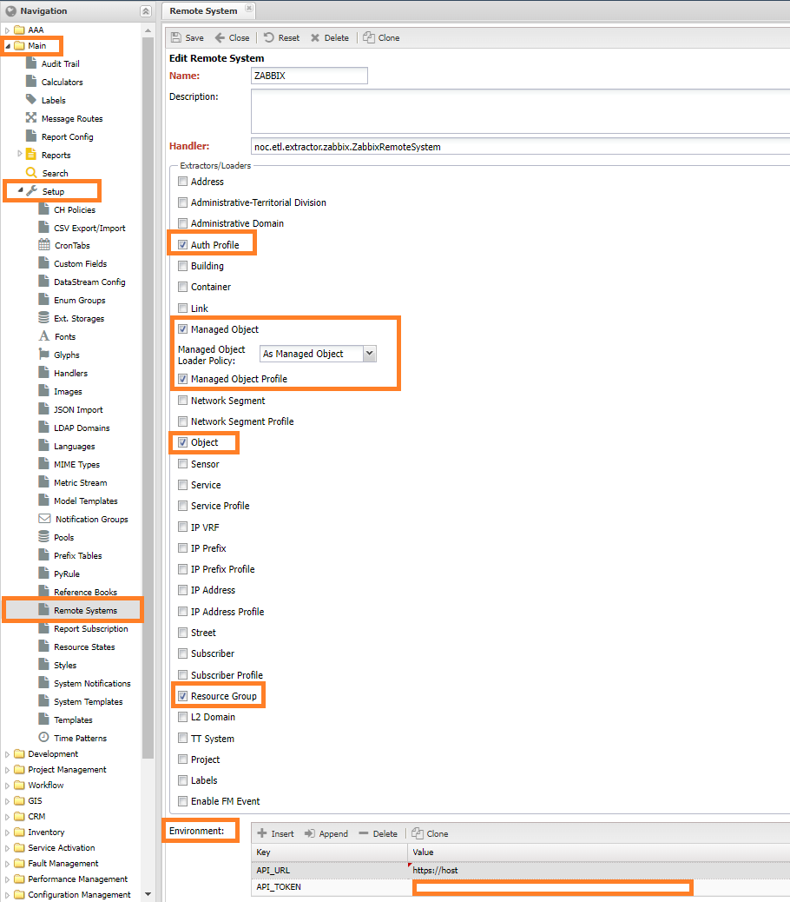

Connecting Zabbix Remote System as Managed Object Source¶
Zabbix is quite often used as a monitoring system. When collecting data on network equipment, NOC is often connected, in this case there may be a situation when the equipment needs to be entered into two systems, which is quite inconvenient. For the case when Zabbix is a master system (equipment is added first), it can be integrated with NOCa through the ETL mechanism by adding it as an external system and synchronizing devices with it (Managed Object).
For this scheme, NOCa includes an adapter for integration with Zabbix, it allows:
- Synchronize Groups (Group) of Zabbix to their corresponding Resource Groups (Resource Group) of NOCa
- Load Zabbix Hosts (Host) that support SNMP as Devices (Managed Object) of NOC.
- If a Host (Host) has filled in coordinates, a PoP* can be created on its base on the map.
- Integrate by API Key or through a user (User)
- Specify groups (Group) from which the equipment will be received.
[!WARNING]
The python-zabbix-utils library will need to be installed for the adapter to work, this can be done with the
./bin/pip install -r .requirements/zabbix.txtcommand from thenocdirectory.
Adding an external system¶
Thanks to the ETL mechanism, NOC can fetch cluster composition information by integrating with vCenter. NOC has an integration adapter located in noc.core.etl.extractor.zabbix.Zabbix.ZabbixRemoteSystem. To enable it, you need to configure Remote System (Remote System), menu section Main -> Setup -> Remote System. In it, perform the following steps:
- Click the Add button. The Add System form will open
- Enter data in the fields provided:
- Name (Name) can be any word, the instructions use
ZABBIX. - Handler (Handler) is the path to the adapter, enter
noc.core.etl.extractor.zabbix.ZabbixRemoteSystem. - Among the checkboxes presented, check the following:
Managed Object,Object,Resource Group. - In the Environment field enter the details of connection to Zabbix:
- API_URL - name (or IP address) where Zabbix is installed.
- API_TOKEN - access token string
- We will get a form filled out similarly to the image below
- Click the Save button.

If everything went through without errors, the list should show the added record with the specified name.
Translated with DeepL.com (free version)
Configuring Rules¶
The upload creates an Auth Profile (Auth Profile) - ZB.AUTO, it is also assigned to devices. By default, it does not have access credentials. Therefore, to work it is necessary to specify them in Service Activation -> Setup -> Auth Profile, or set up Credential Check Rules in Service Activation -> Setup -> Credential Check Rules.
The Administrative Domain (Administrative Domain) is default, and the Network Segment (Network Segment) is ALL to host offload devices.
For devices (Managed Object) a Object Profile (Object Profile) is created - zb.std.sw.
Warning
If a field is changed during synchronization, it will overwrite the changes made by the user in the system.
Configuring the adapter¶
In the Environment field of the Remote System you can specify settings for the adapter, for Zabbix the following are available:
- API_URL - a link to Zabbix in the format
https://<host>is placed - API_TOKEN - the authentication token is specified - if a scheme with it is used
- GROUPS_FILTER - lists the names of Zabbix groups whose hosts will be unloaded. Semicolon separator. The names must EXACTLY match those in Zabbix.
- DEFAULT_SCHEME - default access scheme for the devices to be offloaded. If not specified, it will be SSH:
- 1 - TELNET
- 2 - SSH
- DEFAULT_POOL - pool (Pool) to host the devices. If not specified, it will be default
- LOCATION_FIELD - name of the field in Inventory Zabbix that contains the geographic address string. To locate the equipment on the map. Used if no width or longitude is specified:
lan/lot.
Warning
The LOCATION_FIELD setting is not currently supported
Using a Purgatorium¶
By default, Zabbix hosts (Host) are used to create devices (Managed Obejct) during the upload process, but it is possible to use the Purgatorium mechanism to store hosts from Zabbix. In this case the results are first registered as Discovered Objects and are available under Service Activation -> Setup -> Discovered Objects. ~~Instruction manual (link)~~.
To send devices to the Discovered Objects, the Managed Object Loader Policy setting of the External System must be changed to Discovered Object.
Note
The Discovered Objects functionality is available from version 24.1 in experimental mode.
Data unloading¶
After adding an external system, the data unloading procedure must be started. This is done through the ./noc etl console command. To run it, go to the folder with the installed NOC - /opt/noc and do the following steps:
- Start getting data from vCenter with the command
./noc etl extract ZABBIX, instead ofZABBIXyou should specify the name given when adding the external system. - To check that some records have been unloaded, use the
./noc etl diff --summary ZABBIXcommand, the screen will display statistics on the records received. - After the synchronization is complete (if there are no errors), check the data with the
./noc etl check ZABBIXcommand. If errors are detected, you should return to the previous step and check the settings made. - To load the obtained records into the system, run the
./noc etl load ZABBIXcommand.
Migration from Contrib¶
If the adapter from Contrib was used for synchronization with Zabbix, then to use the adapter out of the box, you need to change the Handler field in the external system settings. If no changes were made to the contrib code - the following changes will occur during synchronization when switching to the adapter out of the box:
- Administrative Domain will change to
Default'. *Network Segment* will change toALL'. PoP will be deleted.
To avoid such changes, you can copy the code from the built-in adapter into the current adapter (from Contrib), replacing the values of the administrative_domain and segment fields respectively:
administrative_domain-zb.rootsegment-!new
Warning
If any customizations were made, they should be moved :)
Adapter modification¶
If you need to add/change the adapter's logic or use your own, you can use the mechanism for placing system modifications (Custom). When using this mechanism, customizations are placed in a separate folder, which allows you to update the system without having to restore your changes after an update. Instructions for using Custom